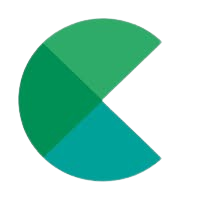

Recorrido práctico
Ruta ACrear proyectos con agentes de IA: construye primero; estudia cuando lo necesites.

Aprender haciendo + IA. Programa proyectos propios con Python y agentes. Tú entiendes, compruebas y decides.
Crear proyectos con agentes de IA: construye primero; estudia cuando lo necesites.
Aprender programación con Python: estudia los fundamentos y aplícalos. Aprende Python progresivamente: estudia los fundamentos con los cuadernos y aplica cada idea en una práctica.
Antes de empezar, configura tu profesor particular con el pack del curso
Abrir guía de configuraciónCopia el prompt en tu profesor particular y sigue sus instrucciones.
Descubre cómo crear y mejorar un videojuego 2D con ayuda de agentes
De lo aprendido a tu proyectoPrint, variables, tipos, operadores, condicionales y bucles.
Bloque 2Cadenas, listas, tuplas, conjuntos, diccionarios y comprehensions.
Bloque 3Def, parametros, return, scope, try/except, archivos y modulos.
Bloque 4Clases, objetos, metodos, composicion, herencia y polimorfismo.
Bloque 5NumPy · Pandas · Playwright · ReportLab · informes PDF.
Bloque 6Script, VS Code, venv, Git local, debugger e IA controlada.
Bloque 7Programacion asistida critica, cierre del proyecto del curso, defensa y LangGraph.
src/, docs/ y test/ para ver cómo separa implementación, guía y pruebas.css/, js/ y tests/, y cómo emplea Three.js y WebGPU.README.md, sus categorías y los tutoriales enlazados para descubrir cómo se construye un proyecto paso a paso.README.md, elige una API y estudia cómo realizar peticiones HTTP y utilizar respuestas JSON desde Python.README.md, la documentación de la API y los ejemplos para conectar un programa Python con un modelo local.